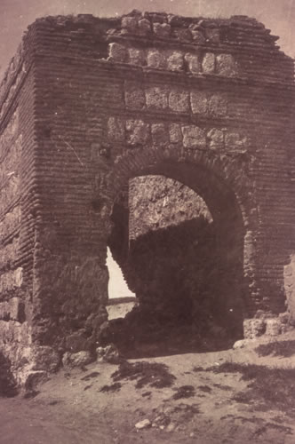

Illescas
Introducción
Edificios destacados
- Santuario de la Virgen de la Caridad
- Arco de Ugena
Illescas es un municipio español, capital de la comarca de La Sagra y perteneciente a la provincia de Toledo, en la comunidad autónoma de Castilla-La Mancha. Es la tercera ciudad más poblada de la provincia de Toledo tras Talavera de la Reina y la capital.
Historia
Según recientes estudios arqueológicos, el primer pueblo que se asentó de una forma notoria en la zona fueron los oretanos, pueblo íbero, fundando la antigua Isturgi, en el lugar que hoy ocupa la pedanía de Los Villares de Andújar. Con el dominio Romano, el Municipium Isturgi Triumphale quedó adscrito a la Hispania Ulterior. Todo indica que fue una ciudad floreciente al abrigo de la producción y comercialización de la cerámica romana.
Illescas estuvo poblada desde la época prehistórica. La leyenda remonta su fundación al año 2621 a. de C. por los griegos curetes que la denominaron Ilarcuris. Los datos ciertos más antiguos, son los proporcionados por las excavaciones realizadas en el yacimiento de El Cerrón, donde se asentó un poblado celtibérico desde fines del siglo V al siglo II a. de C. Estuvo habitada también en época romana. En el año 636 San Ildefonso fundó un monasterio de religiosas benitas, dedicado a la Virgen María, junto a la aldea que pasó a denominarse villa dubiense, y cuya ubicación hoy desconocemos Junto a él se construyó un pequeño hospital y una ermita donde se colocaría la imagen de la Virgen de la Caridad. Tras la invasión árabe de la península, en el año 711, se construyeron un alcázar y algunas fortificaciones. Posteriormente fue tomada en 1085 durante el proceso de reconquista de Toledo por Alfonso VI. Este rey ordenó reedificarla y amurallarla, disponiendo en su perímetro de cinco puertas de entrada: la de Madrid, Toledo, Talavera, Puerta del Sol y Ugena, siendo ésta última la única que hoy conservamos. Después, la villa fue donada al Obispo de Toledo en fecha indeterminada.
Lugares relevantes
Santuario de la Virgen de la Caridad

El Greco, por mediación de su hijo, en 1603 consiguió un contrato para realizar cuatro cuadros en la Capilla mayor del Hospital de la Caridad de Illescas (Toledo). Los cuadros corresponden al periodo tardío del pintor y, aunque no pueden ser contemplados en la Capilla mayor para la que fueron diseñados, se encuentran en el Hospital de Illescas. Las cuatro están consideradas obras maestras. Entre los numerosos conflictos económicos que provocaron las tasaciones de su obra, el que se originó por este contrato es uno de los más documentados. Por razones desconocidas aceptó que la tasación final fuera realizada por tasadores nombrados por el Hospital. Estos fijaron un precio muy reducido de 2.410 ducados, lo que provocó un largo pleito que llegó hasta la Cancillería Real de Valladolid y al Nuncio papal de Madrid. El litigio terminó en 1607 y aunque se hicieron tasaciones intermedias entorno de los 4.000 ducados al final se pagó una cantidad similar a la establecida inicialmente. El varapalo de Illescas afectó gravemente a la economía del Greco.
Arco de Ugena
El Arco de Ugena es un cuerpo de edificación de planta cuadrada, abierta por dos arcos apuntados y de medio punto en la cara norte y sur respectivamente y, cerrada por los otros dos costados con orientación este y oeste. En función de los materiales que forman parte de su construcción, podemos clasificar la tipología de los muros existentes en mixtos, al ser las fábricas obtenidas por la combinación de algunos de los sistemas tradicionales, en este caso mampostería y ladrillo de 8,70 de largo, 6, 70 de ancho y 6 m. de altura. Se han ido añadiendo cada cierta altura de mampostería dos o tres hiladas ( verdugadas) de ladrillo con objeto de homogeneizar los asientos. El aparejo utilizado es de ladrillo del lugar de 5 cm de canto, combinado con mampuestos de piedra caliza.